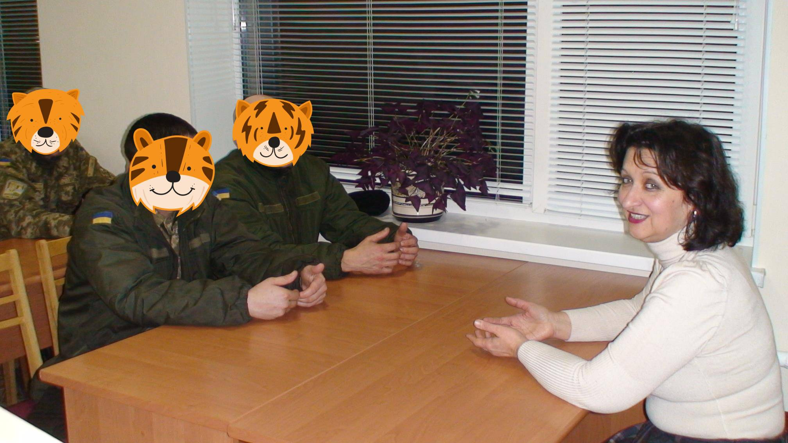

Ольга Безклинська
Роль музикотерапії в подоланні екзистенціальних криз в учасників бойових дій.
Постановка проблеми. Україна переживає складні, доленосні часи: йде війна за збереження цілісності і незалежності країни. Період радикальних зрушень примушує людську свідомість загострено сприймати історичні реалії. Трагічна подійність - війна, постає як екзистенціальна проблема нашої країни, пов'язана зі стражданнями людей, і знаходить власне відображення на психологічному здоров’ї усього народу. Особливу увагу потребують учасники бойових дій, що брали участь в антитерористичній операції. Після пережитих військових подій у більшості військовослужбовців залишається глибока душевна травма. Тому однією із актуальних проблем сучасного українського суспільства є психологічна допомога учасникам бойових дій. Це питання розглядається на державному рівні, задіяні громадські організації, значну методичну допомогу надають фахівці з інших країн, удосконалюються психолого-організаційні підходи. Особливої уваги заслуговує музикотерапія, яка ефективно використовується в багатьох країнах і рекомендується для практичного впровадження фахівцями, що займаються реабілітацією комбатантів з бойовою психічною травмою. [6] Музикотерапія, як показують сучасні дослідження - один із ефективних методів подолання екзистенціальних криз, корекції стресових станів, звільнення від психологічних травм і в цілому відновленню психічного здоров'я людини. Тому важливо розробити підходи щодо використання методів музикотерапії в комплексній реабілітації захисників України.
“Для формування оптимістичного погляду на життя військовослужбовцям пропонується ознайомлення з філософськими поглядами та життєвим досвідом відомих особистостей.”
Мета доповіді. Узагальнити результати запровадження музикотерапії для подолання екзистенціальних криз в учасників бойових дій.
Аналіз останніх досліджень і публікацій.
Музично-терапевтичний досвід людства протягом тисячоліть та наукове сучасне підґрунтя вивчення впливу музики на людину, дало можливість виокремлення такої спеціальної дисципліни як музична терапія. Перші наукові пояснення впливу музичного мистецтва на організм людини з’являються у XVII ст., а широкі експериментальні дослідження проводяться лише у XIX-ХХ ст. У наукових публікаціях В. М. Бехтерєва, І. М. Догеля, І. Р. Тарханова та ін. були описані результати досліджень щодо сприятливого впливу музики на центральну нервову систему, дихання, кровообіг. Як навчальна дисципліна, музикотерапія вперше з'явилася в 1918 році у Колумбійському університеті (США), її розробником стала Маргарет Андерсен, музикант з Великобританії. Був розроблений перший курс «Музикотерапії» для лікування неврозу та покращення фізичного здоров’я солдатів, що постраждали під час Першої світової війни. Ця практика стала основою сучасної музикотерапії, яка активно почала розвиватись з кінця 40-х років минулого століття. [4 ]. Музична терапія як незалежна дисципліна широко практикується у США, Франції, Англії, Австралії, Японії, Новій Зеландії та інших країнах світу. Значний внесок в розвиток і поширення музикотерапії в глобальному масштабі робить Всесвітня федерація музичної терапії (World Federation of Music Therapy - WFMT) [16], яка була офіційно створена в Генуї (Італія) в 1985 році. Сучасна музикотерапія розвивається як інтегративна дисципліна на стику нейрофізіології, психології, музичної психології, музикознавства та інших наук [1,8]. Особлива роль у розвитку музикотерапії належить французькій школі професора Альфреда Томатіса, який звернув увагу на ефективність музики В.А. Моцарта, її здатність стимулювати інтелект і позитивно впливати на здоров’я людини. Антоніо Менегетті (Італія) розробив основи онтопсихологічної музикотерапії, спрямованої на профілактику стресових станів, за допомогою комплексної дії через спів, звук, танець. Представники німецької музикотерапевтичної школи, що очолює з Ч. Швабе , зважаючи на тезу про психофізичну єдність людини, основну увагу спрямувала на розвиток різних форм комплексного використання цілющого впливу різних видів мистецтв. [ 8]. Дослідженнями впливу музики на гармонізації душевного стану людини займаються сучасні філософи, психологи, науковці, педагоги: Шушарджан С.В., Шабутін С. В., Хміль С. В., Шабутіна І. В., Якушева О.В., Петрушин В.І. О.Г. Сиропятов, Н.А. Дзеружинска та ін. [3]. О. Г. Сиропятов, Н.О. Дзеружинска розглядають музикотерапію як психотерапевтичний метод безпосереднього впливу на почуття, емоції, настрої; безсловесного навіювання певного настрою, що піднімає людину над своїми переживаннями, що допомагає долати хворобливі розлади з використанням в лікувальних цілях музики. З цієї позиції дослідники розглядають музикотерапію як складову соціально-психологічного вектору реабілітації комбатантів з бойовою психічною травмою. [6].
“Схвальний відгук програми «Музика- антистрес» військовослужбовцями та лікарями, стало підґрунтям для розробки методичних рекомендацій щодо використання музикотерапії в комплексній реабілітації учасників бойових дій.”
Виклад основного матеріалу.
Музикотерапія в цілому розвивається як інтегративна дисципліна на стику нейрофізіології, психології, рефлексології, музичної психології, музикознавства та інших наук. Сучасні клінічні дослідження підтверджують, що музика активно впливає на функції усіх життєво важливих фізіологічних систем організму людини, сприяє розвитку розумових здібностей, образного мислення, зміцненню фізичного і психічного здоров’я, несе могутній естетично-емоційний вплив, що спонукає людину до творення краси в навколишньому світі й на внутрішнє самовдосконалення. [5,7]. Тому музика через науку музикотерапію виступає потужним джерелом духовних ідей, глибинних почуттів, і реальним інструментом саморегуляції, корекції здоров’я, станів і поведінки людини. Для практичного запровадження музикотерапії в комплексну реабілітацію учасників АТО нами була розроблена і удосконалена соціально-психологічна реабілітаційна програма «Музика-антистрес». Мета програми – гармонізація психоемоційного стану учасників АТО, покращення самопочуття, фізичного здоров’я.
Завдання:
- Презентувати систему музикотерапевтичних засобів, що сприяють збереженню фізичного й психічного здоров’я людини.
- Познайомити слухачів з основними методами музичної терапії в тренінговому режимі
- Спонукати до свідомого використання музики для психоемоційної самокорекції, подолання роздратованості, внутрішнього напруження формування оптимістичного погляду на життя.
- Створити умови для оволодіння навичками самоконтролю концентрації уваги та зосередженості засобами музикотерапії.
- Створити позитивний емоційний фон реабілітації.
Для реалізації програми використовуються основні форми музикотерапії: активна, пасивна (рецептивна), інтегративна. Програма пропонує музичні твори світової класики, українську народну музику, пісні та сучасні високохудожні музичні композиції. Їх вибір проводився з урахуванням оцінки психоемоційного стану слухачів та загальних підходів щодо використання музичних творів у музикотерапії.
Важливе місце у Програмі займають психологічні тренінги (проводяться з використанням музичного супроводу), які спрямовані на досягнення психоемоційної рівноваги, контролю над власною увагою, оволодіння умінням сконцентруватись.
Одним із ефективних методів програми є слухання музики в стані медитації. Медитація (в перекладі з санскриту - зосередженість) – психологічна техніка, яка широко використовується у складі оздоровчої практики і передбачає розвиток навичок контролю за увагою, за умінням зупиняти внутрішнє мовлення, що несе розслаблення і спокій. Варто зауважити, що медитація широко використовується як складова комплексної психологічної підготовки військовослужбовців в США.
На заняттях з музикотерапії, військовослужбовці навчаються технікам тонування звуків та антистресового дихання. Заспокійливий ефект під час протяжного співу досягається завдяки подовження вдиху і видиху.
Для формування оптимістичного погляду на життя військовослужбовцям пропонується ознайомлення з філософськими поглядами та життєвим досвідом відомих особистостей. Наприклад: «Мистецтво маленьких кроків» А. Екзюпері, «Промова Ч.Чапліна в день 70-річчя» тощо. Проникливе слово, сказане на фоні змістовної музики глибоко входить у свідомість і здатне змінити бачення особистих проблем, вийти за їх межі та додати сили для їх подолання.
Теоретичні засади проведення занять з музикотерапії базуються на загальних законах психології та технології проведення психотерапевтичних втручань, що доповнюються специфічними можливостями впливу музики. Ефективне проведення занять потребує творчого підходу, вміння встановити стосунки співробітництва. Перевагу необхідно надавати недирективному консультуванні, спілкування на зрозумілій мові, заохочення військових до висловлення своїх поглядів, підтримання позитивних сподівань на майбутнє та будь-які позитивні зміни моделі поведінки.
“Військовослужбовці в цілому підтримують запровадження занять з музикотерапії у комплексній реабілітації учасників бойових дій.”
Для визначення ставлення військовослужбовців до занять з музикотерапії було проведеyj анонімне анкетне опитування. В опитуванні взяли участь 28 військовослужбовців чоловічої статі (27 з них брали участь в АТО). Анкета включала 4 запитання. На питання «Чи отримали Ви нову, корисну інформацію на заняттях з музикотерапії?» позитивну відповідь дали 100%. На запитання «Як впливають заняття з музикотерапії на Ваш настрій?» – 96,4 % відповіли позитивно, на запитання «Як Ви вважаєте, чи потрібно проводити заняття з музикотерапії в інших закладах, які надають допомогу учасникам АТО?» – 96,4 % відповіли позитивно, на запитання «Чи є у Вас потреба поповнити знання з питань самодопомоги для попередження негативного впливу стресу на стан здоров’я?» – 96,4 % відповіли позитивно. Таким чином, військовослужбовці в цілому підтримують запровадження занять з музикотерапії у комплексній реабілітації учасників бойових дій.
Висновки.
1. Запровадження програми « Музика – антистрес» у військових госпіталях, реабілітаційних центрах, військових частинах, несе воїнам естетичне наповнення, сприяє формуванню філософського погляду на життя, допомагає знайти у музиці невичерпний резерв життєвих духовних сил.
2. Схвальний відгук програми «Музика- антистрес» військовослужбовцями та лікарями, стало підґрунтям для розробки методичних рекомендацій щодо використання музикотерапії в комплексній реабілітації учасників бойових дій.
Список літератури:
1. Апанасенко Г.Л. Музыкальная терапия: история, современность и перспективы развития/ Г.Л.Апанасенко, Н. А. Савельева-Кулик // Український медичний часопис - 2012.- № 4 – [Електронний ресурс] – Режим доступу: http://www.umj.com.ua/article/10694/muzykalnaya-terapiya-istoriya-sovremennost-i-perspektivy-razvitiya – Назва з екрану
2. Блаво Р. Исцеление музыкой / Р. Блаво. – Санкт-Петербург: ПИТЕР, 2003.- 192 с.
3. Декер-Фойгт Г.Г. Введение в музыкотерапию (Пер. с нем.) / Г.Г. Декер-Фойгт. – Санкт-Петербург: ПИТЕР, 2003. – 208 с.
4. Драганчук В. Музична терапія: теорія та історія / В. Драганчук – Луцьк: РВВ «Вежа» Волин. нац. ун-ту ім. Лесі Українки, 2010. – 225 с.
5. Клюев А.С. Музыкотерапия: эстетико-психологический и клинический аспекты / А.С. Клюев - Санкт-Петербург: СПбГИПСР, 2010.- 35 с.
6. Сыропятов О.Г. Клинические стандарты реабилитации комбатантов с боевой психической травмой: методическое пособие /О.Г. Сыропятов, Н.А. Дзеружинская - Киев, 2014 – [Електронний ресурс] – Режим доступу: http://universalinternetlibrary.ru/book/60719/chitat_knigu.shtml – Назва з екрану].
7. Шабутін С.В. Зцілення музикою / С.В. Шабутін, І.В.Шабутіна, С.В Хміль– Тернопіль: Підручники і посібники, 2006. – 191 с.
8. Шушарджан С.В. Руководство по музыкальной терапии / С.В. Шушарджан – Москва: Медицина, 2005.– 450 с.